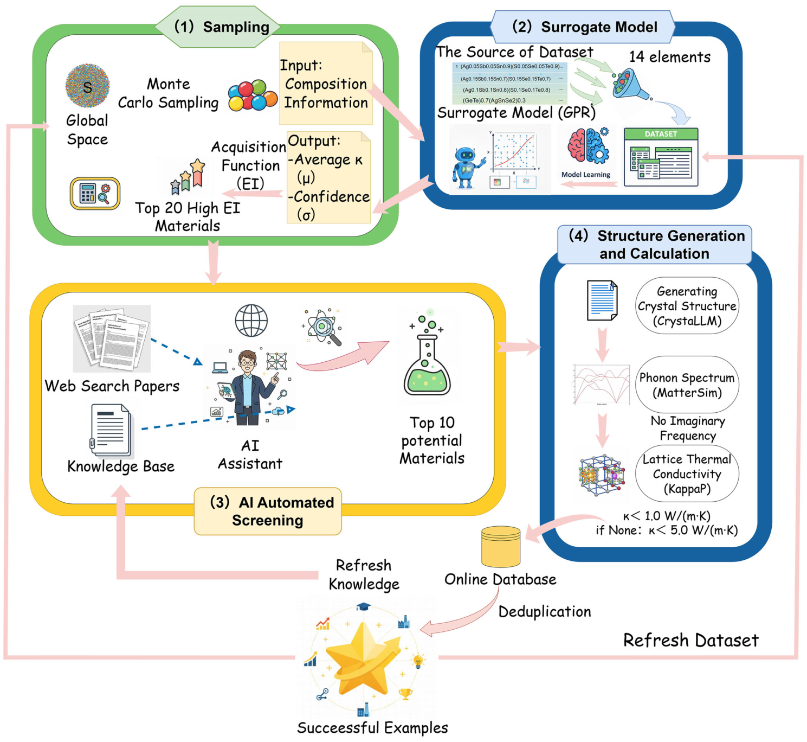
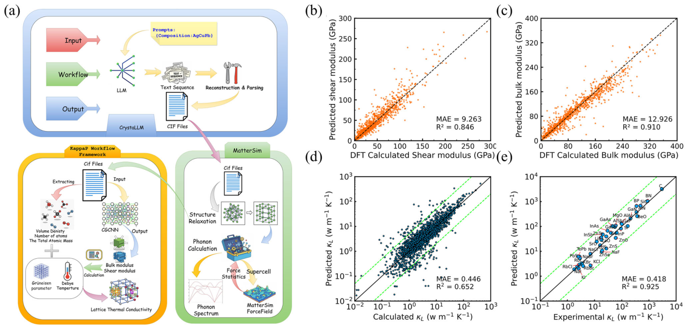
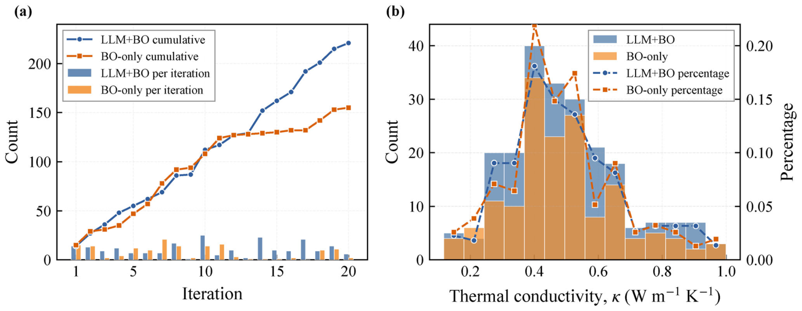
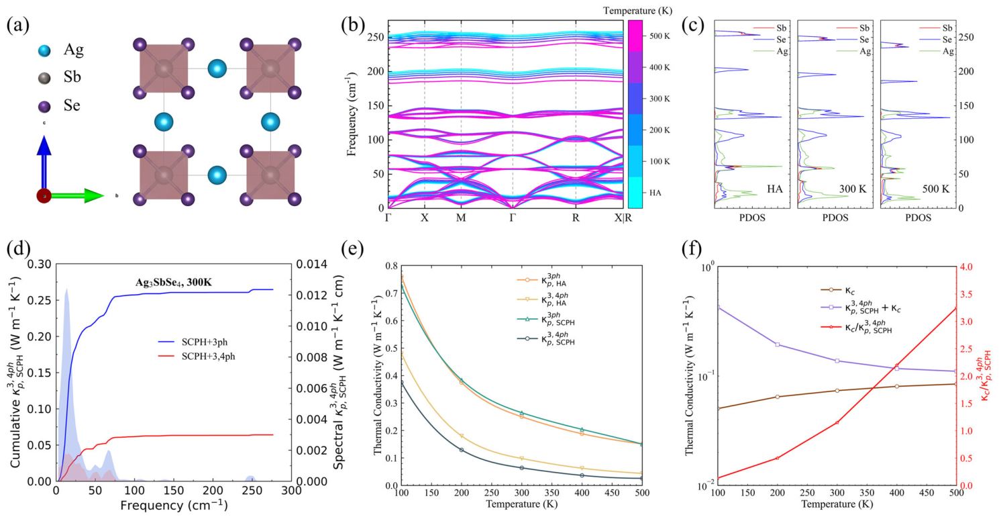
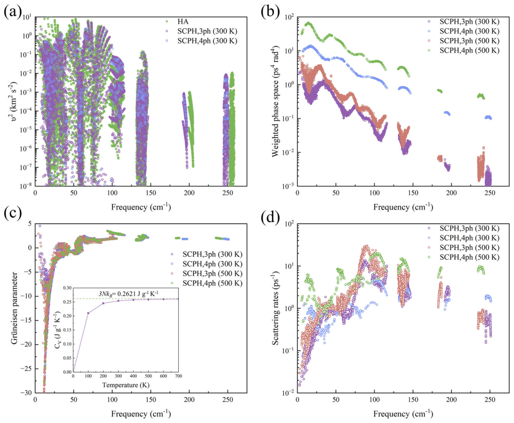
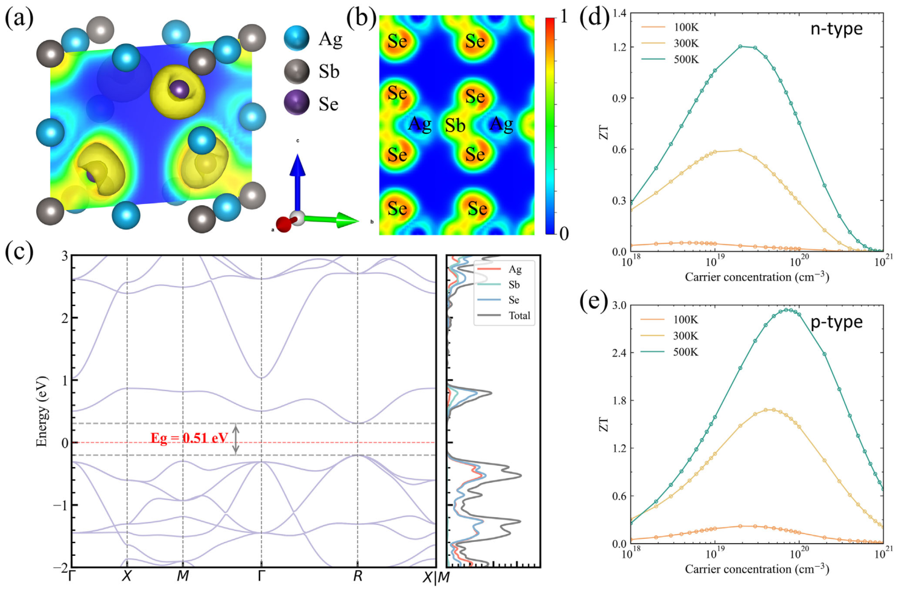

LLM 怎样帮助找到超低热导硫属化物：组成搜索、结构生成与声子机制接成闭环
论文原文 ↗原文：Yujie Liu、Congran Jia、Yuzhou Hao 等，LLM-Assisted Design of Ultralow-κ Chalcogenides，Advanced Science，2026，e78175。DOI ·
热电材料利用温差发电，希望电荷容易通过、热量却不容易漏走。因此，降低晶格热导率 κ 是一个重要入口。但从化学式一路算到热导率，通常要先确定晶体结构，再求原子间作用、声子散射和热输运；把这套计算用于庞大组成空间，成本很高。
这篇工作把搜索拆成几层：贝叶斯优化提出组成，大语言模型结合低热导知识重排候选，结构生成与物理计算筛选材料，再把结果反馈给下一轮。 作者找到 Ag₃SbSe₄、Ag₄TiSe₄ 和 Ag₄TiTe₄ 等动态稳定候选，并对其中的超低热导机制做了更深入的第一性原理计算。以 Ag₃SbSe₄ 为例，预测的晶格热导率在 500 K 低至约 0.11 W·m⁻¹·K⁻¹，p 型热电优值 ZT 可达到 2.94。
一、从哪里开始搜索：先提出化学式，再决定哪些值得算结构
作者从文献数据中整理出 220 个化合物，温度范围为 295–350 K，所含元素来自 Ag、As、Bi、Cu、Ge、In、Pb、S、Sb、Se、Sn、Te、Ti、V 这 14 种元素。每个组成写成固定元素顺序的 14 维向量，以供模型学习组成与热导率的关系。
这套初始数据训练的是高斯过程回归模型（GPR）。它对一个未计算的组成同时给出热导率预测和不确定性；随后，贝叶斯优化（BO）用“期望改进”指标 EI 排序。EI 综合考虑两个因素：某处预测值是否足够低，以及当前信息是否不足、值得探索。模型以 logκ 为学习目标，以适应热导率跨越较大数值范围的特点。
候选化学式由离散空间中的蒙特卡洛链提出。程序可以替换元素、让某个化学计量系数增减 1，或切换三元组合，再按照预测值、不确定性和 EI 等信息决定是否接受。本文主要搜索 A–B–Ch 硫属化物：A 来自 Ag、Cu、In、Sn、Pb，B 来自 As、Sb、Ge、Bi、Ti、V，Ch 为 S、Se、Te。搜索策略同时保留采集函数引导和随机探索，避免过早集中到很小的一片区域。

图1｜BO 先挑出 20 个组成，LLM 结合知识与检索线索选出 10 个，随后生成结构、计算稳定性和热导率，并把结果送回模型与知识记录。
LLM 接收什么信息，具体做哪一步
每轮 BO 排名前 20 的化学式送给 DeepSeek。它读取低热导理论文档，并通过 Agno 的公开网页检索补充相关线索：组成是否符合低热导设计原则，有没有重元素、孤对电子或较大质量差，以及相关材料中有哪些已有先例。
这些知识为什么有用？重元素及软键可能带来低频振动和较低声速；孤对电子可改变局部成键与晶格非谐性；复杂的振动模式则可能增加声子之间的散射通道。LLM 将这些机理线索用于候选间的定性比较，给出排序及理由，再留下 10 个组成进入下一阶段。
此时具体晶体还没有生成，LLM 依据的是化学式、领域知识和相关先例。完整结构的稳定性和热导率在后面的计算中确定。闭环反馈更新 GPR 的数据以及供 LLM 参考的理论文档、案例记录，下一轮由此获得新的搜索依据。
二、一个化学式怎样变成可评价的材料
以被选中的 Ag₃SbSe₄ 为例，化学式只规定原子配比，还没有说明这些原子在晶胞中怎样排列。作者用 CrystaLLM 补上结构：这是一个学习晶体文件序列规律的生成模型，接收组成后逐个生成符号，形成含晶格和原子位置的 CIF 文件。每个组成生成 5 个结构，因此每轮 10 个组成最多得到 50 个初始结构。
随后，MatterSim 通用机器学习原子势提供能量和受力，程序分粗、细两步优化原子位置和晶胞。对松弛后的结构作有限位移声子计算：让原子产生微小位移，计算回复力，从而得到晶格振动模式。如果某些振动频率为虚数，说明结构沿相应方向会继续变形，流程据此淘汰这些候选。
通过这一步的结构再交给 KappaP 快速估算热导率。其输入是完整晶体图：原子构成节点，局部邻接关系连接节点。预训练的晶体图卷积网络 CGCNN 从结构预测体积模量 B 和剪切模量 G，分别描述材料抵抗压缩和剪切的能力。结合密度、晶胞体积和原子质量，程序推导声速、声学德拜温度与 Grüneisen 参数，最后代入 Slack 热导率模型。
其中，声学德拜温度概括声学振动的特征能量尺度；Grüneisen 参数联系振动频率与体积变化，表征晶格非谐响应。Slack 模型将这些物理量连接到热导率，使大批候选能够先经过快速筛选。

图2｜左侧是从 CIF 到稳定性和热导率的计算链；右侧分别比较弹性模量预测，以及热导率估算与 AFLOW、文献实验数据的对应关系。
弹性模型使用 Matbench 中约 1.1 万个结构的模量数据训练。图2中剪切模量和体积模量的测试 R² 分别为 0.846 和 0.910；KappaP 又与 2,535 个 AFLOW 理论条目、38 种材料的室温实验值比较。这样，快速估算这一环节既联系结构弹性，也有独立的热导率数据用于评估。
筛选以“声子无虚频、室温 κ 小于 1 W·m⁻¹·K⁻¹”为成功条件。若某轮没有成功项，则把动态稳定且 κ 小于 5 的近成功项也纳入反馈。松弛后结构会去重，最终候选与 MP、OQMD、AFLOW 作结构比较。作者对重点候选还进一步进行 DFT 能量和精细热输运计算。
三、LLM 重排带来什么收益：20 轮找到 221 个，而 BO 对照为 155 个

图3｜左图比较 20 轮中的每轮和累计成功数，右图比较所得候选的热导率分布。后半程累计曲线拉开，LLM 重排流程保留了更多通过后续筛选的低热导候选。
在作者的 20 轮对照中，加入 LLM 重排的流程累计得到 221 个通过验证的低热导候选，BO-only 流程得到 155 个，前者增加 66 个，约提高 43%。收益主要在后半程拉开，说明结合新计算结果继续更新排序依据，有助于后续发现。
右图还表明，两种流程都覆盖了 κ<1 的范围，LLM 重排增加了其中成功候选的数量。这项比较直接回答了工作流的问题：在候选组成已经由 BO 提出以后，再加入领域知识进行局部优先级判断，能否提高进入结构计算后的命中数？本文得到的是肯定结果。
在更大范围的自动筛选中，作者报告共得到 2,742 个动态稳定、κ≤1 W·m⁻¹·K⁻¹ 的候选。这是整体高通量筛选结果，与上述 20 轮对照的 221 个是两项不同统计。
四、为什么 Ag₃SbSe₄ 的热导率这么低
作者重点研究了 Ag₃SbSe₄，以及 Ag₄TiSe₄、Ag₄TiTe₄。Ag₃SbSe₄ 属于立方 P-43m 空间群，原胞含 8 个原子，晶格常数约为 6.445 Å。它的声子谱没有虚频；三种候选相对竞争相的凸包能量依次为 0.131、0.049、0.052 eV/atom，作为具有动态稳定性的亚稳候选进一步研究。
热振动会改变振动本身，需要把温度带回声子模型
声子是晶格振动的量子化表示。简单的谐近似把原子附近的势能看成抛物线，振动频率由平衡结构决定。强非谐材料中，振幅增大后会感受到势能中的更高阶项，频率随温度发生变化，这称为声子重整化。
作者先从第一性原理分子动力学中抽取构型，用压缩感知晶格动力学拟合三阶、四阶原子间力常数，再采用自洽声子方法 SCPH 计算温度相关的振动频率。Ag₃SbSe₄ 从低温升至 500 K 时，低频模式同时存在硬化和软化，高频光学支则整体软化。Ag 原子的振动主要集中在低频区域，成为解释热输运的重要入口。

图4｜上排连接结构与温度相关振动；下排比较三声子、四声子散射及相干通道对热导率的影响。f 中相干项与粒子项之比随温度升高，500 K 时达到 3.25。
四声子散射显著压低粒子式输运
在粒子图像中，声子携带能量传播，热导率与群速度平方及寿命有关。三声子、四声子过程分别描述三种或四种振动模式之间的相互作用；更多散射使热流更难持续传播。
仅考虑重整化和三声子散射时，Ag₃SbSe₄ 的粒子项 κₚ 在 300 K 约为 0.25 W·m⁻¹·K⁻¹；加入四声子散射后降到 0.064。500 K 时，相应数值从约 0.15 降至 0.026。这说明高阶散射对这类软晶格材料有显著作用。
图5进一步提供了原因：声子群速度低，频率接近水平的平坦分支又带来大量可用散射组合。散射“相空间”描述满足能量、动量条件的组合有多少；四声子过程的相空间大，并随温度显著增加。低速传播与强散射共同压低了粒子式热输运。

图5｜a 显示较低的声子群速度，b 比较三声子和四声子的散射相空间，d 给出相应散射速率；这些结果把低热导与具体振动特征联系起来。
相干通道为何反而占主导
除了各声子模式独立携热的粒子项，作者还计算了不同、频率接近的振动模式之间的波动式耦合，即相干贡献 κ꜀。总晶格热导率为 κₗ=κₚ+κ꜀。
到 300 K，κ꜀ 已超过包含四声子散射的 κₚ；500 K 时两者比值达到 3.25。此时粒子项只有约 0.026，总热导率约为 0.11 W·m⁻¹·K⁻¹。因此，“相干主导”和“超低热导”同时出现：强非谐散射使粒子通道非常弱，相干通道成为剩余热流中的主要部分。
作者把这种晶体中的输运称为类似玻璃的行为，物理来源是强非谐性和模式间耦合。它把快速筛出的低 κ 数值进一步解释为可辨认的晶格动力学机制。
五、低热导能否带来好的热电性能
热电优值 ZT=S²σT/(κₑ+κₗ)，其中 S 为塞贝克系数，σ 为电导率，κₑ 和 κₗ 分别为电子及晶格热导率。低 κₗ 有利于减小分母，但还需要电子能带和载流子输运配合。
Ag₃SbSe₄ 的 PBE 计算带隙为 0.51 eV。作者从能带中找到有利于空穴输运的多能谷特征，再计算声学形变势、极性光学声子和离化杂质等散射对电输运的影响，随温度和载流子浓度求得 ZT。

图6｜a、b 用电子局域函数展示成键环境，c 为能带与电子态密度；d、e 比较 n 型和 p 型材料在不同温度、载流子浓度下的预测 ZT。
在 500 K、空穴浓度 7×10¹⁹ cm⁻³ 时，Ag₃SbSe₄ 的预测最大 ZT 为 2.94；同温度下 n 型最大约为 1.2，对应电子浓度 2×10¹⁹ cm⁻³。p 型的优势与其价带多能谷结构相联系。
另外两种候选的预测最大值出现在 700 K：p 型 Ag₄TiSe₄ 的 ZT 为 2.47，载流子浓度为 2×10²⁰ cm⁻³；p 型 Ag₄TiTe₄ 的 ZT 为 3.68，对应 9×10¹⁹ cm⁻³。这些热电计算用于进一步评价低热导候选，前面的组成搜索和 LLM 排序以低 κ 为目标。
六、这项工作的贡献在哪里
方法上，本文把统计搜索、机理知识和结构计算接成了可迭代的材料发现流程。LLM 在 BO 已给出的局部候选集合里综合知识，结构生成与计算负责把组成落实为可评价材料，计算结果又成为下一轮搜索和判断的输入。20 轮对照给出了这一优先级层带来的实际命中数收益。
材料物理上，论文把银基硫属化物的超低热导追溯到低速振动、强高阶散射和相干输运，并把这一认识接到热电性能预测。值得借鉴的是这条连续路线：先用便宜模型寻找目标区域，再让知识改变计算优先级，最后把资源集中到少数候选的细致机制研究上。
原始摘要完整中文翻译
第一性原理筛选的高昂成本限制了极端晶格热导率（κ）材料的加速发现。本文开发了一套由大语言模型辅助的低 κ 材料发现工作流：贝叶斯优化（BO）提出候选，LLM 进行基于证据条件的重新排序，基于物理的结构生成、稳定性验证和 κ 计算则作为接受候选的判据。这种集成实现了高效的候选优先级选择，同时保持严格的物理验证。
该工作流识别出具有动态稳定性的银基硫属化物，包括 Ag₃SbSe₄、Ag₄TiSe₄ 和 Ag₄TiTe₄。机理分析表明，它们的超低 κ 源于强声子重整化以及由相干过程主导的热输运。由于 κ 低至 0.11 W·m⁻¹·K⁻¹，预测 Ag₃SbSe₄ 在 500 K 时的最大 ZT 可达到 2.94。此外，对包含 14 种元素的三元化合物开展自动化高通量筛选，识别出 2,742 个具有动态稳定性、κ≤1.0 W·m⁻¹·K⁻¹ 的材料。这些结果表明，基于证据条件的 LLM 重排序能够有效增强由 BO 驱动、经过物理验证的材料发现。